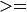

Feature Detection and Description¶
gpu::FAST_GPU¶
-
class
gpu::FAST_GPU¶
Class used for corner detection using the FAST algorithm.
class FAST_GPU
{
public:
enum
{
LOCATION_ROW = 0,
RESPONSE_ROW,
ROWS_COUNT
};
// all features have same size
static const int FEATURE_SIZE = 7;
explicit FAST_GPU(int threshold, bool nonmaxSuppression = true,
double keypointsRatio = 0.05);
void operator ()(const GpuMat& image, const GpuMat& mask, GpuMat& keypoints);
void operator ()(const GpuMat& image, const GpuMat& mask,
std::vector<KeyPoint>& keypoints);
void downloadKeypoints(const GpuMat& d_keypoints,
std::vector<KeyPoint>& keypoints);
void convertKeypoints(const Mat& h_keypoints,
std::vector<KeyPoint>& keypoints);
void release();
bool nonmaxSuppression;
int threshold;
double keypointsRatio;
int calcKeyPointsLocation(const GpuMat& image, const GpuMat& mask);
int getKeyPoints(GpuMat& keypoints);
};
The class FAST_GPU implements FAST corner detection algorithm.
See also
gpu::FAST_GPU::FAST_GPU¶
Constructor.
-
C++:
gpu::FAST_GPU::FAST_GPU(int threshold, bool nonmaxSuppression=true, double keypointsRatio=0.05)¶ Parameters: - threshold – Threshold on difference between intensity of the central pixel and pixels on a circle around this pixel.
- nonmaxSuppression – If it is true, non-maximum suppression is applied to detected corners (keypoints).
- keypointsRatio – Inner buffer size for keypoints store is determined as (keypointsRatio * image_width * image_height).
gpu::FAST_GPU::operator ()¶
Finds the keypoints using FAST detector.
-
C++:
gpu::FAST_GPU::operator()(const GpuMat& image, const GpuMat& mask, GpuMat& keypoints)¶
-
C++:
gpu::FAST_GPU::operator()(const GpuMat& image, const GpuMat& mask, std::vector<KeyPoint>& keypoints)¶ Parameters: - image – Image where keypoints (corners) are detected. Only 8-bit grayscale images are supported.
- mask – Optional input mask that marks the regions where we should detect features.
- keypoints –
The output vector of keypoints. Can be stored both in CPU and GPU memory. For GPU memory:
- keypoints.ptr<Vec2s>(LOCATION_ROW)[i] will contain location of i’th point
- keypoints.ptr<float>(RESPONSE_ROW)[i] will contain response of i’th point (if non-maximum suppression is applied)
gpu::FAST_GPU::downloadKeypoints¶
Download keypoints from GPU to CPU memory.
-
C++:
gpu::FAST_GPU::downloadKeypoints(const GpuMat& d_keypoints, std::vector<KeyPoint>& keypoints)¶
gpu::FAST_GPU::convertKeypoints¶
Converts keypoints from GPU representation to vector of KeyPoint.
-
C++:
gpu::FAST_GPU::convertKeypoints(const Mat& h_keypoints, std::vector<KeyPoint>& keypoints)¶
gpu::FAST_GPU::calcKeyPointsLocation¶
Find keypoints and compute it’s response if nonmaxSuppression is true.
-
C++:
gpu::FAST_GPU::calcKeyPointsLocation(const GpuMat& image, const GpuMat& mask)¶ Parameters: - image – Image where keypoints (corners) are detected. Only 8-bit grayscale images are supported.
- mask – Optional input mask that marks the regions where we should detect features.
The function returns count of detected keypoints.
gpu::FAST_GPU::getKeyPoints¶
Gets final array of keypoints.
-
C++:
gpu::FAST_GPU::getKeyPoints(GpuMat& keypoints)¶ Parameters: - keypoints – The output vector of keypoints.
The function performs non-max suppression if needed and returns final count of keypoints.
gpu::ORB_GPU¶
-
class
gpu::ORB_GPU¶
Class for extracting ORB features and descriptors from an image.
class ORB_GPU
{
public:
enum
{
X_ROW = 0,
Y_ROW,
RESPONSE_ROW,
ANGLE_ROW,
OCTAVE_ROW,
SIZE_ROW,
ROWS_COUNT
};
enum
{
DEFAULT_FAST_THRESHOLD = 20
};
explicit ORB_GPU(int nFeatures = 500, float scaleFactor = 1.2f,
int nLevels = 8, int edgeThreshold = 31,
int firstLevel = 0, int WTA_K = 2,
int scoreType = 0, int patchSize = 31);
void operator()(const GpuMat& image, const GpuMat& mask,
std::vector<KeyPoint>& keypoints);
void operator()(const GpuMat& image, const GpuMat& mask, GpuMat& keypoints);
void operator()(const GpuMat& image, const GpuMat& mask,
std::vector<KeyPoint>& keypoints, GpuMat& descriptors);
void operator()(const GpuMat& image, const GpuMat& mask,
GpuMat& keypoints, GpuMat& descriptors);
void downloadKeyPoints(GpuMat& d_keypoints, std::vector<KeyPoint>& keypoints);
void convertKeyPoints(Mat& d_keypoints, std::vector<KeyPoint>& keypoints);
int descriptorSize() const;
void setParams(size_t n_features, const ORB::CommonParams& detector_params);
void setFastParams(int threshold, bool nonmaxSuppression = true);
void release();
bool blurForDescriptor;
};
The class implements ORB feature detection and description algorithm.
gpu::ORB_GPU::ORB_GPU¶
Constructor.
-
C++:
gpu::ORB_GPU::ORB_GPU(int nFeatures=500, float scaleFactor=1.2f, int nLevels=8, int edgeThreshold=31, int firstLevel=0, int WTA_K=2, int scoreType=0, int patchSize=31)¶ Parameters: - nFeatures – The number of desired features.
- scaleFactor – Coefficient by which we divide the dimensions from one scale pyramid level to the next.
- nLevels – The number of levels in the scale pyramid.
- edgeThreshold – How far from the boundary the points should be.
- firstLevel – The level at which the image is given. If 1, that means we will also look at the image scaleFactor times bigger.
gpu::ORB_GPU::operator()¶
Detects keypoints and computes descriptors for them.
-
C++:
gpu::ORB_GPU::operator()(const GpuMat& image, const GpuMat& mask, std::vector<KeyPoint>& keypoints)¶
-
C++:
gpu::ORB_GPU::operator()(const GpuMat& image, const GpuMat& mask, GpuMat& keypoints)¶
-
C++:
gpu::ORB_GPU::operator()(const GpuMat& image, const GpuMat& mask, std::vector<KeyPoint>& keypoints, GpuMat& descriptors)¶
-
C++:
gpu::ORB_GPU::operator()(const GpuMat& image, const GpuMat& mask, GpuMat& keypoints, GpuMat& descriptors)¶ Parameters: - image – Input 8-bit grayscale image.
- mask – Optional input mask that marks the regions where we should detect features.
- keypoints –
The input/output vector of keypoints. Can be stored both in CPU and GPU memory. For GPU memory:
keypoints.ptr<float>(X_ROW)[i]contains x coordinate of the i’th feature.keypoints.ptr<float>(Y_ROW)[i]contains y coordinate of the i’th feature.keypoints.ptr<float>(RESPONSE_ROW)[i]contains the response of the i’th feature.keypoints.ptr<float>(ANGLE_ROW)[i]contains orientation of the i’th feature.keypoints.ptr<float>(OCTAVE_ROW)[i]contains the octave of the i’th feature.keypoints.ptr<float>(SIZE_ROW)[i]contains the size of the i’th feature.
- descriptors – Computed descriptors. if
blurForDescriptoris true, image will be blurred before descriptors calculation.
gpu::ORB_GPU::downloadKeyPoints¶
Download keypoints from GPU to CPU memory.
-
C++:
gpu::ORB_GPU::downloadKeyPoints(GpuMat& d_keypoints, std::vector<KeyPoint>& keypoints)¶
gpu::ORB_GPU::convertKeyPoints¶
Converts keypoints from GPU representation to vector of KeyPoint.
-
C++:
gpu::ORB_GPU::convertKeyPoints(Mat& d_keypoints, std::vector<KeyPoint>& keypoints)¶
gpu::BruteForceMatcher_GPU_base¶
-
class
gpu::BruteForceMatcher_GPU_base¶
Brute-force descriptor matcher. For each descriptor in the first set, this matcher finds the closest descriptor in the second set by trying each one. This descriptor matcher supports masking permissible matches between descriptor sets.
class BruteForceMatcher_GPU_base
{
public:
explicit BruteForceMatcher_GPU_base(int norm = cv::NORM_L2);
// Add descriptors to train descriptor collection.
void add(const std::vector<GpuMat>& descCollection);
// Get train descriptors collection.
const std::vector<GpuMat>& getTrainDescriptors() const;
// Clear train descriptors collection.
void clear();
// Return true if there are no train descriptors in collection.
bool empty() const;
// Return true if the matcher supports mask in match methods.
bool isMaskSupported() const;
void matchSingle(const GpuMat& query, const GpuMat& train,
GpuMat& trainIdx, GpuMat& distance,
const GpuMat& mask = GpuMat(), Stream& stream = Stream::Null());
static void matchDownload(const GpuMat& trainIdx,
const GpuMat& distance, std::vector<DMatch>& matches);
static void matchConvert(const Mat& trainIdx,
const Mat& distance, std::vector<DMatch>& matches);
void match(const GpuMat& query, const GpuMat& train,
std::vector<DMatch>& matches, const GpuMat& mask = GpuMat());
void makeGpuCollection(GpuMat& trainCollection, GpuMat& maskCollection,
const vector<GpuMat>& masks = std::vector<GpuMat>());
void matchCollection(const GpuMat& query, const GpuMat& trainCollection,
GpuMat& trainIdx, GpuMat& imgIdx, GpuMat& distance,
const GpuMat& maskCollection, Stream& stream = Stream::Null());
static void matchDownload(const GpuMat& trainIdx, GpuMat& imgIdx,
const GpuMat& distance, std::vector<DMatch>& matches);
static void matchConvert(const Mat& trainIdx, const Mat& imgIdx,
const Mat& distance, std::vector<DMatch>& matches);
void match(const GpuMat& query, std::vector<DMatch>& matches,
const std::vector<GpuMat>& masks = std::vector<GpuMat>());
void knnMatchSingle(const GpuMat& query, const GpuMat& train,
GpuMat& trainIdx, GpuMat& distance, GpuMat& allDist, int k,
const GpuMat& mask = GpuMat(), Stream& stream = Stream::Null());
static void knnMatchDownload(const GpuMat& trainIdx, const GpuMat& distance,
std::vector< std::vector<DMatch> >& matches, bool compactResult = false);
static void knnMatchConvert(const Mat& trainIdx, const Mat& distance,
std::vector< std::vector<DMatch> >& matches, bool compactResult = false);
void knnMatch(const GpuMat& query, const GpuMat& train,
std::vector< std::vector<DMatch> >& matches, int k,
const GpuMat& mask = GpuMat(), bool compactResult = false);
void knnMatch2Collection(const GpuMat& query, const GpuMat& trainCollection,
GpuMat& trainIdx, GpuMat& imgIdx, GpuMat& distance,
const GpuMat& maskCollection = GpuMat(), Stream& stream = Stream::Null());
static void knnMatch2Download(const GpuMat& trainIdx, const GpuMat& imgIdx, const GpuMat& distance,
std::vector< std::vector<DMatch> >& matches, bool compactResult = false);
static void knnMatch2Convert(const Mat& trainIdx, const Mat& imgIdx, const Mat& distance,
std::vector< std::vector<DMatch> >& matches, bool compactResult = false);
void knnMatch(const GpuMat& query, std::vector< std::vector<DMatch> >& matches, int k,
const std::vector<GpuMat>& masks = std::vector<GpuMat>(),
bool compactResult = false);
void radiusMatchSingle(const GpuMat& query, const GpuMat& train,
GpuMat& trainIdx, GpuMat& distance, GpuMat& nMatches, float maxDistance,
const GpuMat& mask = GpuMat(), Stream& stream = Stream::Null());
static void radiusMatchDownload(const GpuMat& trainIdx, const GpuMat& distance, const GpuMat& nMatches,
std::vector< std::vector<DMatch> >& matches, bool compactResult = false);
static void radiusMatchConvert(const Mat& trainIdx, const Mat& distance, const Mat& nMatches,
std::vector< std::vector<DMatch> >& matches, bool compactResult = false);
void radiusMatch(const GpuMat& query, const GpuMat& train,
std::vector< std::vector<DMatch> >& matches, float maxDistance,
const GpuMat& mask = GpuMat(), bool compactResult = false);
void radiusMatchCollection(const GpuMat& query, GpuMat& trainIdx, GpuMat& imgIdx, GpuMat& distance, GpuMat& nMatches, float maxDistance,
const std::vector<GpuMat>& masks = std::vector<GpuMat>(), Stream& stream = Stream::Null());
static void radiusMatchDownload(const GpuMat& trainIdx, const GpuMat& imgIdx, const GpuMat& distance, const GpuMat& nMatches,
std::vector< std::vector<DMatch> >& matches, bool compactResult = false);
static void radiusMatchConvert(const Mat& trainIdx, const Mat& imgIdx, const Mat& distance, const Mat& nMatches,
std::vector< std::vector<DMatch> >& matches, bool compactResult = false);
void radiusMatch(const GpuMat& query, std::vector< std::vector<DMatch> >& matches, float maxDistance,
const std::vector<GpuMat>& masks = std::vector<GpuMat>(), bool compactResult = false);
private:
std::vector<GpuMat> trainDescCollection;
};
The class BruteForceMatcher_GPU_base has an interface similar to the class DescriptorMatcher. It has two groups of match methods: for matching descriptors of one image with another image or with an image set. Also, all functions have an alternative to save results either to the GPU memory or to the CPU memory.
See also
gpu::BruteForceMatcher_GPU_base::match¶
Finds the best match for each descriptor from a query set with train descriptors.
-
C++:
gpu::BruteForceMatcher_GPU_base::match(const GpuMat& query, const GpuMat& train, std::vector<DMatch>& matches, const GpuMat& mask=GpuMat())¶
-
C++:
gpu::BruteForceMatcher_GPU_base::matchSingle(const GpuMat& query, const GpuMat& train, GpuMat& trainIdx, GpuMat& distance, const GpuMat& mask=GpuMat(), Stream& stream=Stream::Null())¶
-
C++:
gpu::BruteForceMatcher_GPU_base::match(const GpuMat& query, std::vector<DMatch>& matches, const std::vector<GpuMat>& masks=std::vector<GpuMat>())¶
-
C++:
gpu::BruteForceMatcher_GPU_base::matchCollection(const GpuMat& query, const GpuMat& trainCollection, GpuMat& trainIdx, GpuMat& imgIdx, GpuMat& distance, const GpuMat& masks=GpuMat(), Stream& stream=Stream::Null() )¶
See also
gpu::BruteForceMatcher_GPU_base::makeGpuCollection¶
Performs a GPU collection of train descriptors and masks in a suitable format for the gpu::BruteForceMatcher_GPU_base::matchCollection() function.
-
C++:
gpu::BruteForceMatcher_GPU_base::makeGpuCollection(GpuMat& trainCollection, GpuMat& maskCollection, const vector<GpuMat>& masks=std::vector<GpuMat>())¶
gpu::BruteForceMatcher_GPU_base::matchDownload¶
Downloads matrices obtained via gpu::BruteForceMatcher_GPU_base::matchSingle() or gpu::BruteForceMatcher_GPU_base::matchCollection() to vector with DMatch.
-
C++:
gpu::BruteForceMatcher_GPU_base::matchDownload(const GpuMat& trainIdx, const GpuMat& distance, std::vector<DMatch>& matches)¶
-
C++:
gpu::BruteForceMatcher_GPU_base::matchDownload(const GpuMat& trainIdx, const GpuMat& imgIdx, const GpuMat& distance, std::vector<DMatch>& matches)¶
gpu::BruteForceMatcher_GPU_base::matchConvert¶
Converts matrices obtained via gpu::BruteForceMatcher_GPU_base::matchSingle() or gpu::BruteForceMatcher_GPU_base::matchCollection() to vector with DMatch.
-
C++:
gpu::BruteForceMatcher_GPU_base::matchConvert(const Mat& trainIdx, const Mat& distance, std::vector<DMatch>& matches)¶
-
C++:
gpu::BruteForceMatcher_GPU_base::matchConvert(const Mat& trainIdx, const Mat& imgIdx, const Mat& distance, std::vector<DMatch>& matches)¶
gpu::BruteForceMatcher_GPU_base::knnMatch¶
Finds the k best matches for each descriptor from a query set with train descriptors.
-
C++:
gpu::BruteForceMatcher_GPU_base::knnMatch(const GpuMat& query, const GpuMat& train, std::vector<std::vector<DMatch>>& matches, int k, const GpuMat& mask=GpuMat(), bool compactResult=false)¶
-
C++:
gpu::BruteForceMatcher_GPU_base::knnMatchSingle(const GpuMat& query, const GpuMat& train, GpuMat& trainIdx, GpuMat& distance, GpuMat& allDist, int k, const GpuMat& mask=GpuMat(), Stream& stream=Stream::Null())¶
-
C++:
gpu::BruteForceMatcher_GPU_base::knnMatch(const GpuMat& query, std::vector<std::vector<DMatch>>& matches, int k, const std::vector<GpuMat>& masks=std::vector<GpuMat>(), bool compactResult=false )¶
-
C++:
gpu::BruteForceMatcher_GPU_base::knnMatch2Collection(const GpuMat& query, const GpuMat& trainCollection, GpuMat& trainIdx, GpuMat& imgIdx, GpuMat& distance, const GpuMat& maskCollection=GpuMat(), Stream& stream=Stream::Null())¶ Parameters: - query – Query set of descriptors.
- train – Training set of descriptors. It is not be added to train descriptors collection stored in the class object.
- k – Number of the best matches per each query descriptor (or less if it is not possible).
- mask – Mask specifying permissible matches between the input query and train matrices of descriptors.
- compactResult – If
compactResultistrue, thematchesvector does not contain matches for fully masked-out query descriptors. - stream – Stream for the asynchronous version.
The function returns detected k (or less if not possible) matches in the increasing order by distance.
The third variant of the method stores the results in GPU memory.
See also
gpu::BruteForceMatcher_GPU_base::knnMatchDownload¶
Downloads matrices obtained via gpu::BruteForceMatcher_GPU_base::knnMatchSingle() or gpu::BruteForceMatcher_GPU_base::knnMatch2Collection() to vector with DMatch.
-
C++:
gpu::BruteForceMatcher_GPU_base::knnMatchDownload(const GpuMat& trainIdx, const GpuMat& distance, std::vector<std::vector<DMatch>>& matches, bool compactResult=false)¶
-
C++:
gpu::BruteForceMatcher_GPU_base::knnMatch2Download(const GpuMat& trainIdx, const GpuMat& imgIdx, const GpuMat& distance, std::vector<std::vector<DMatch>>& matches, bool compactResult=false)¶
If compactResult is true , the matches vector does not contain matches for fully masked-out query descriptors.
gpu::BruteForceMatcher_GPU_base::knnMatchConvert¶
Converts matrices obtained via gpu::BruteForceMatcher_GPU_base::knnMatchSingle() or gpu::BruteForceMatcher_GPU_base::knnMatch2Collection() to CPU vector with DMatch.
-
C++:
gpu::BruteForceMatcher_GPU_base::knnMatchConvert(const Mat& trainIdx, const Mat& distance, std::vector<std::vector<DMatch>>& matches, bool compactResult=false)¶
-
C++:
gpu::BruteForceMatcher_GPU_base::knnMatch2Convert(const Mat& trainIdx, const Mat& imgIdx, const Mat& distance, std::vector<std::vector<DMatch>>& matches, bool compactResult=false)¶
If compactResult is true , the matches vector does not contain matches for fully masked-out query descriptors.
gpu::BruteForceMatcher_GPU_base::radiusMatch¶
For each query descriptor, finds the best matches with a distance less than a given threshold.
-
C++:
gpu::BruteForceMatcher_GPU_base::radiusMatch(const GpuMat& query, const GpuMat& train, std::vector<std::vector<DMatch>>& matches, float maxDistance, const GpuMat& mask=GpuMat(), bool compactResult=false)¶
-
C++:
gpu::BruteForceMatcher_GPU_base::radiusMatchSingle(const GpuMat& query, const GpuMat& train, GpuMat& trainIdx, GpuMat& distance, GpuMat& nMatches, float maxDistance, const GpuMat& mask=GpuMat(), Stream& stream=Stream::Null())¶
-
C++:
gpu::BruteForceMatcher_GPU_base::radiusMatch(const GpuMat& query, std::vector<std::vector<DMatch>>& matches, float maxDistance, const std::vector<GpuMat>& masks=std::vector<GpuMat>(), bool compactResult=false)¶
-
C++:
gpu::BruteForceMatcher_GPU_base::radiusMatchCollection(const GpuMat& query, GpuMat& trainIdx, GpuMat& imgIdx, GpuMat& distance, GpuMat& nMatches, float maxDistance, const std::vector<GpuMat>& masks=std::vector<GpuMat>(), Stream& stream=Stream::Null())¶ Parameters: - query – Query set of descriptors.
- train – Training set of descriptors. It is not added to train descriptors collection stored in the class object.
- maxDistance – Distance threshold.
- mask – Mask specifying permissible matches between the input query and train matrices of descriptors.
- compactResult – If
compactResultistrue, thematchesvector does not contain matches for fully masked-out query descriptors. - stream – Stream for the asynchronous version.
The function returns detected matches in the increasing order by distance.
The methods work only on devices with the compute capability  1.1.
The third variant of the method stores the results in GPU memory and does not store the points by the distance.
See also
gpu::BruteForceMatcher_GPU_base::radiusMatchDownload¶
Downloads matrices obtained via gpu::BruteForceMatcher_GPU_base::radiusMatchSingle() or gpu::BruteForceMatcher_GPU_base::radiusMatchCollection() to vector with DMatch.
-
C++:
gpu::BruteForceMatcher_GPU_base::radiusMatchDownload(const GpuMat& trainIdx, const GpuMat& distance, const GpuMat& nMatches, std::vector<std::vector<DMatch>>& matches, bool compactResult=false)¶
-
C++:
gpu::BruteForceMatcher_GPU_base::radiusMatchDownload(const GpuMat& trainIdx, const GpuMat& imgIdx, const GpuMat& distance, const GpuMat& nMatches, std::vector<std::vector<DMatch>>& matches, bool compactResult=false)¶
If compactResult is true , the matches vector does not contain matches for fully masked-out query descriptors.
gpu::BruteForceMatcher_GPU_base::radiusMatchConvert¶
Converts matrices obtained via gpu::BruteForceMatcher_GPU_base::radiusMatchSingle() or gpu::BruteForceMatcher_GPU_base::radiusMatchCollection() to vector with DMatch.
-
C++:
gpu::BruteForceMatcher_GPU_base::radiusMatchConvert(const Mat& trainIdx, const Mat& distance, const Mat& nMatches, std::vector<std::vector<DMatch>>& matches, bool compactResult=false)¶
-
C++:
gpu::BruteForceMatcher_GPU_base::radiusMatchConvert(const Mat& trainIdx, const Mat& imgIdx, const Mat& distance, const Mat& nMatches, std::vector<std::vector<DMatch>>& matches, bool compactResult=false)¶
If compactResult is true , the matches vector does not contain matches for fully masked-out query descriptors.
Help and Feedback
You did not find what you were looking for?- Ask a question on the Q&A forum.
- If you think something is missing or wrong in the documentation, please file a bug report.

Table Of Contents
- Feature Detection and Description
- gpu::FAST_GPU
- gpu::FAST_GPU::FAST_GPU
- gpu::FAST_GPU::operator ()
- gpu::FAST_GPU::downloadKeypoints
- gpu::FAST_GPU::convertKeypoints
- gpu::FAST_GPU::release
- gpu::FAST_GPU::calcKeyPointsLocation
- gpu::FAST_GPU::getKeyPoints
- gpu::ORB_GPU
- gpu::ORB_GPU::ORB_GPU
- gpu::ORB_GPU::operator()
- gpu::ORB_GPU::downloadKeyPoints
- gpu::ORB_GPU::convertKeyPoints
- gpu::ORB_GPU::release
- gpu::BruteForceMatcher_GPU_base
- gpu::BruteForceMatcher_GPU_base::match
- gpu::BruteForceMatcher_GPU_base::makeGpuCollection
- gpu::BruteForceMatcher_GPU_base::matchDownload
- gpu::BruteForceMatcher_GPU_base::matchConvert
- gpu::BruteForceMatcher_GPU_base::knnMatch
- gpu::BruteForceMatcher_GPU_base::knnMatchDownload
- gpu::BruteForceMatcher_GPU_base::knnMatchConvert
- gpu::BruteForceMatcher_GPU_base::radiusMatch
- gpu::BruteForceMatcher_GPU_base::radiusMatchDownload
- gpu::BruteForceMatcher_GPU_base::radiusMatchConvert